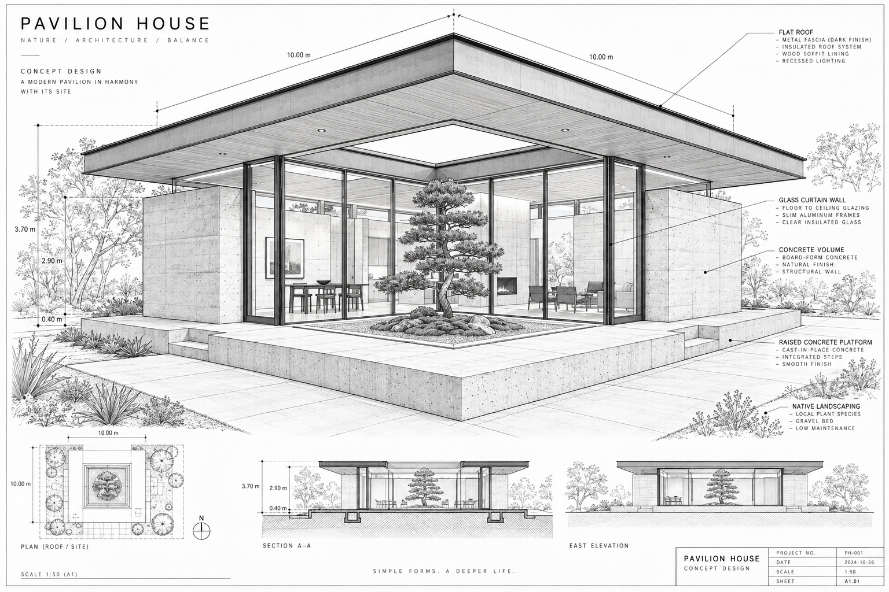
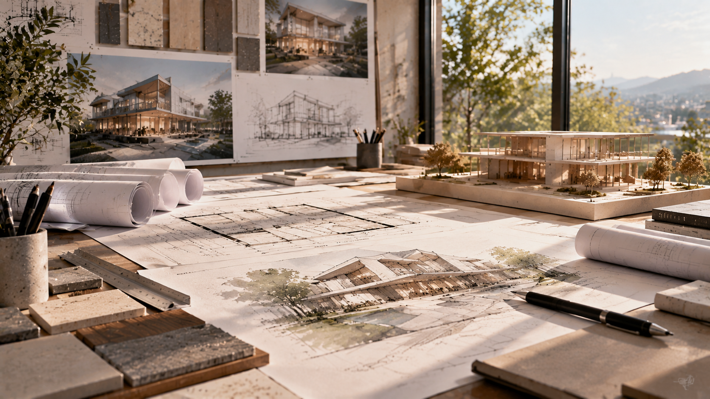

First, we listen.
Every place has a story. We explore the site, understand your ambitions, and ask the questions that give a project its direction.
ARCHITECTURE, WITH INTENTION.
We bring architecture and engineering together to create places that feel right — and stand the test of time.

We are PAJULGAN. A multidisciplinary practice where creative thinking meets structural clarity. From the first sketch to the final detail, we design with curiosity, purpose, and care.
Our work starts with listening. To the landscape. To the way you live. To what a place could become. Then we bring it all together.
Discover our expertise02 / SELECTED EXPLORATIONS
A collection of architectural possibilities.
Residential.
Cultural. Commercial.
Spaces that balance the practical and the poetic. We shape buildings around their context, their purpose, and the people who use them.
CONCEPT DESIGN · SPATIAL PLANNING · DOCUMENTATIONClear structural thinking from the start. Architecture and engineering develop together, creating efficient systems that support ambitious ideas.
STRUCTURAL CONCEPTS · COORDINATION · DETAIL DESIGNMaterial, light, and texture in conversation. Interiors that feel natural to inhabit, with thoughtful details at every scale.
MATERIAL PALETTES · SPACE PLANNING · JOINERYA connected process from early questions to coordinated documentation. We bring people and disciplines together around a shared direction.
DESIGN COORDINATION · CONSULTANT INTEGRATION04 / THE WAY WE WORK

Every place has a story. We explore the site, understand your ambitions, and ask the questions that give a project its direction.
Sketches become spaces. We test form, light, and structure together, refining the details without losing sight of the whole.
Design becomes a coordinated set of decisions. Materials, systems, and construction details come together with precision.
We collaborate through delivery, keeping the original intent at the heart of the work as drawings become lived experience.
EVERY GREAT PLACE STARTS SOMEWHERE.
A new home. A shared space. A different way of thinking.
Tell
us what you have in mind.